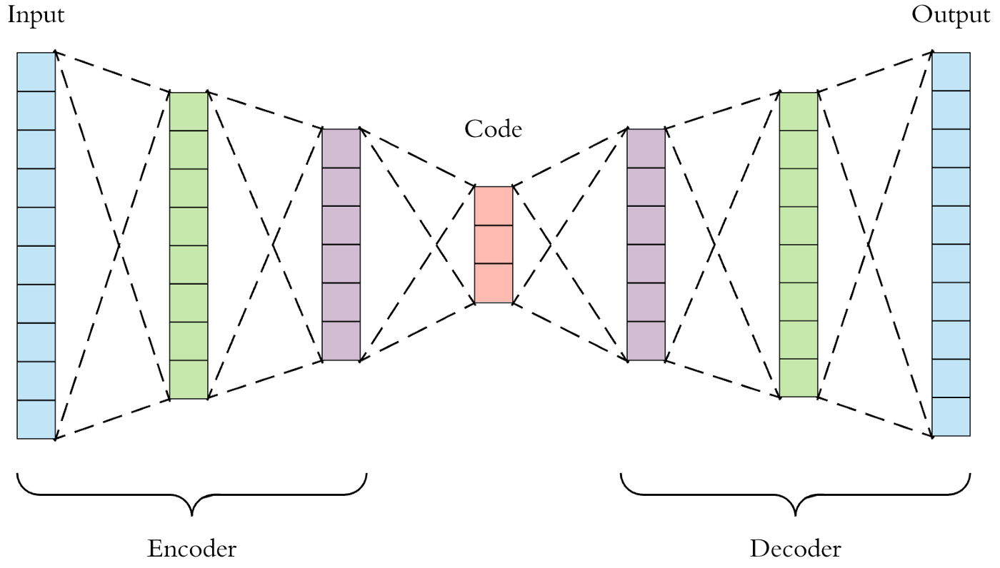
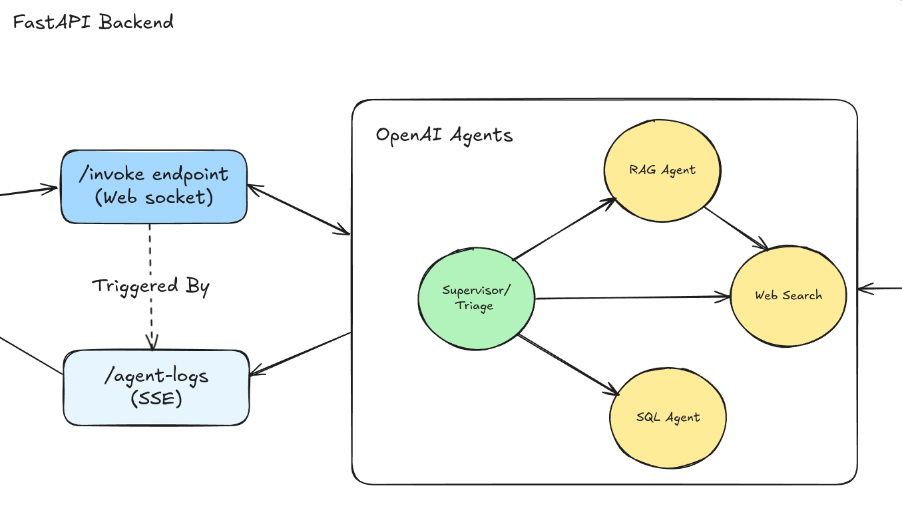
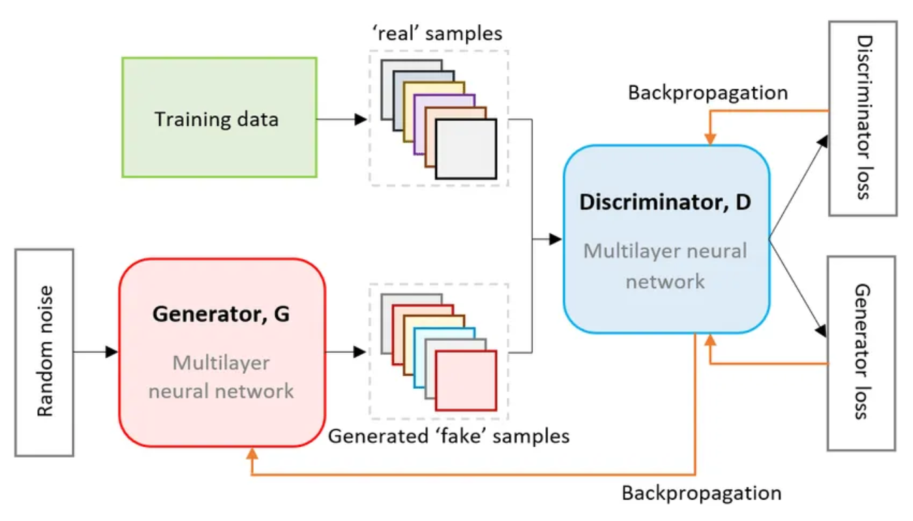
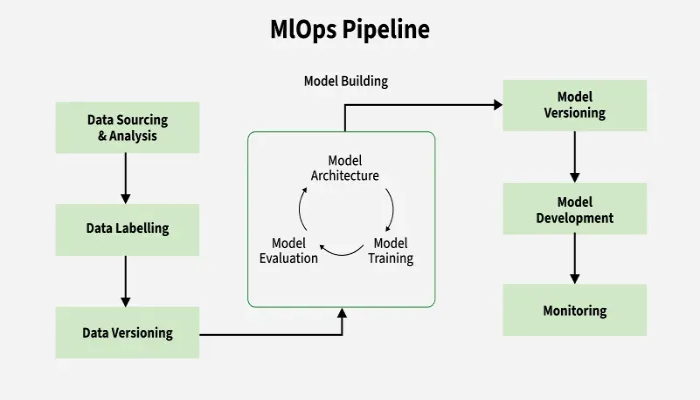
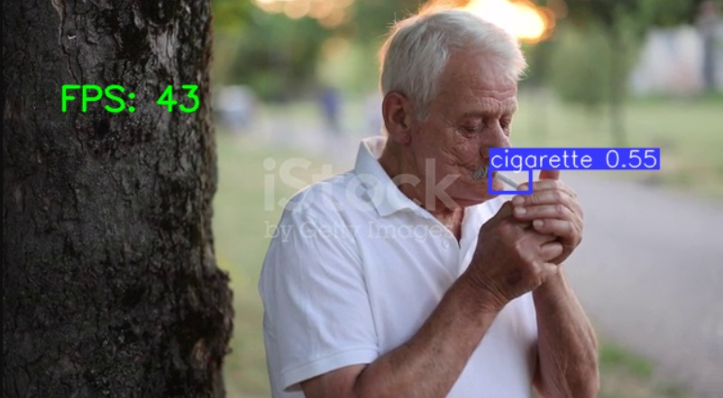

About Me
"Success is not the key to happiness. Happiness is the key to success."
My fascination with technology has been a lifelong journey, leading me to a degree in data science and now, a career in AI engineering. I enjoy the challenge of building intelligent systems and am constantly exploring the intricate puzzles found in math and coding. At heart, I'm a curious problem-solver, always eager to learn and grow in this ever-evolving field.
Experience
My professional journey through various roles in AI/ML, software development, and data science.
Applied AI Lead
Show role highlights
- Led applied AI initiatives across integration and product management to enable streamlined operator onboarding
- Built Tasq Agentic, an agentic harness that runs analytics and diagnosis for operators, along with executive reports and replayable workflows
- Contributed to the research and development of Signal Search, Tasq's novel time series retrieval and Build-your-own-model system
Data Scientist
Show role highlights
- Led core development on Genesis - Agentic SDLC automation platform, driving new client engagements and accelerating software delivery workflows.
- Developed an Agentic Code Migration workflow achieving 93% automation on VB .NET to C# project migrations using OpenAI's Agents SDK.
- Accelerated Agentic AI adoption in internal software workflows, boosting team productivity by 18% through automated unit testing pipelines with ~80% coverage.
- Contributed to ForecastGPT development based on LLM fine-tuning, delivering 8 POC forecasting solutions to clients for domain-agnostic zero-shot forecasting.
- Built a Multi-Modal RAG-based multi-tenant chat platform supporting 6+ document types with optimized indexing and chunking strategies in FastAPI backend.
Data Analyst Intern
Internship
Show role highlights
- Examined Total Addressable Markets from corporate database to identify businesses within geographical and industrial constraints for 32 clients.
- Performed Prospect Intelligence and Deep Profiling for 3 client businesses to identify potential business opportunities.
- Operated within a Big Data environment of Spark consisting of 520 million entities using PySpark and Spark SQL.
- Developed automated data quality checks and validation pipelines for large-scale business datasets.
Backend Dev Intern
Internship
Show role highlights
- Designed & built Clarify, a web-based real-time object detection system providing 8 general use cases with 77% average detection accuracy.
- Developed Feature and Inference Pipelines for YOLOv5 models powering the Clarify platform.
- Developed 3 Django backend projects - CRM Portal, Workflow Engine, and company blog with full authentication and database handling.
- Tested and integrated a Building Management System API to collect data from 104 sensors for IoT analytics.
Core Capabilities
Expertise developed through hands-on experience in AI/ML, software engineering, and cloud technologies.
Machine Learning
Building predictive models, classification systems, and regression pipelines using scikit-learn, XGBoost, and advanced ML techniques.
Generative AI
Creating AI-powered applications using LLMs, prompt engineering, and fine-tuning with OpenAI, Anthropic, and open-source models.
Backend Development
Building robust APIs and microservices with FastAPI, Django, and Node.js for scalable, production-ready applications.
Deep Learning
Designing neural networks with PyTorch and TensorFlow for computer vision, NLP, and time-series forecasting.
Document Processing & RAG
Building intelligent document pipelines with OCR, vector databases, and retrieval-augmented generation systems.
Agentic AI
Creating autonomous AI agents with LangGraph, tool use, and multi-agent orchestration for complex workflows.
MLOps / LLMOps
Implementing ML pipelines with MLFlow, experiment tracking, model versioning, and automated retraining workflows.
Cloud & DevOps
Deploying scalable solutions on AWS with Lambda, S3, RDS, Docker, and CI/CD pipelines.
Data Analysis
Extracting insights from complex datasets with statistical analysis, visualization, and business intelligence.
Technologies I Work With
Cutting-edge tools and frameworks for building the future.
Languages
Frameworks
ML / AI
Generative AI
Database
DevOps & Cloud
Projects

Anomaly Detection with Autoencoders
Built an Autoencoder model to identify anomalies in retail transactions using reconstruction error

Agentic Customer Support
Multi-Agent setup for Technical Customer Support with Real time communication and logging (WIP 🚧)

Generating Brain MRI images: DCGAN
Data Augmentation with Deep Convolutional GAN to generate images of minority classes to improve data distribution & skewness

End to End Attrition Prediction
ML Model hosted on FastAPI endpoint with complete model retraining pipeline

Cigarette Smoking Detection
Real time Cigarette Smoking Detection with fine-tuned YOLOv8 deployed over Django Backend